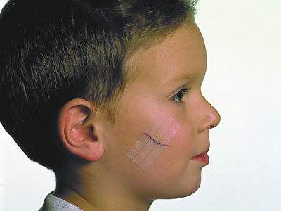

Начнем с первого вопроса, который задают родители.
НАДО ЛИ ЭТО ЗАШИВАТЬ?
Любой порез, который не смыкается (независимо от размера) или длиннее 1/2 дюйма (1 см), возможно, надо зашивать (или хотя бы свести его края другим способом, например, кожным клеем или пластырем). Порезы на лице, которые длиннее 1/4 дюйма (1/2 см), возможно, потребуется зашить. Чем скорее рана закроется, тем меньше опасность инфицирования. Постарайтесь попасть к врачу в течение 4 часов, хотя многие раны можно зашивать и позже этого срока.
ПЕРВАЯ ПОМОЩЬ ПРИ ПОРЕЗАХ И ЦАРАПИНАХ
Небольшие порезы и царапины обычно не требуют поездки в отделение неотложной помощи, но правильная обработка их важна для того, чтобы избежать инфекции. Вот некоторые полезные подсказки, которые помогут вам обработать простые ранки.
ОСТАНОВИТЕ КРОВОТЕЧЕНИЕ!
ОЧИСТИТЕ РАНУ
Нанесите антибиотик. После очистки раны нанесите тонкий слой мази с антибиотиком, например, Банеоцин, Фуцидин, Бактробан, чтобы предохранить поверхность от высыхания. Эти мази препятствуют развитию инфекции и способствуют процессам заживления. |
Сохраняйте в сухости, но влажной. Мы советуем держать струпья сырыми с помощью мази и повязки, но нежелательно, чтобы окружающая кожа была настолько влажной, как «увядшая». Используйте воздухопроницаемые повязки и позволяйте ране «подышать» несколько раз в день.
При большой площади повреждения, например, при «дорожных ранах» (ссадинах) после велосипедных крушений, очень важно, чтобы поверхность, на которой образуются струпья, оставалась влажной. Этого можно достичь, нанося мази с антибиотиками или средства против ожогов (актовегин для наружного применения, пантенол-спрей) на протяжении недели или двух, пока не сформируется новая кожа. Если большие струпья высыхают, они сжимаются и трескаются, что приводит к инфицированию, задержке заживления и образованию рубцов.

ЗАКРОЙТЕ РАНУ
• Хорошая повязка поможет содержать рану в чистоте и защитит от попадания вредных бактерий.
• Меняйте повязку минимум один раз в день и чаще, если она промокла или загрязнилась.
• После того как рана поджила (примерно через 3—5 дней), риск инфицирования уменьшается и воздушные ванны способствуют скорейшему заживлению.
Следите за признаками инфекции. Обратитесь к врачу при появлении какого-либо из этих признаков:
• имеется гнойное отделяемое из раны;
• усиление боли, краснота или припухлость через 48 часов;
• рана в основном не зажила через неделю.
ШВЫ
Как быстро надо обратиться к врачу для наложения швов. В целом большинство порезов должны быть закрыты в течение 24 часов после травмы. Некоторые должны быть закрыты раньше, но вообще безопасное время — до 8 часов. Поэтому, если травма произошла ночью, можно подождать до утра, если вы остановили кровотечение.
Очень важно: если вы решили подождать, промойте порез чистой водой или стерильным физраствором из аптеки, чтобы удалить всю грязь. Не позволяйте ране высыхать. Накройте ее влажной марлей или бинтом и меняйте их каждые два часа, чтобы поддержать влажность. Если это невозможно, то нанесите на порез немного мази с антибиотиком и закройте марлей или бинтом. Делайте это каждые несколько часов, пока не посетите врача утром. |
Четыре варианта того, как закрыть порез. Существуют четыре способа свести края пореза. Врач обсудит их с вами:
1. Стери-стрип. Их называют еще полосками-«бабочками», эти узкие полоски помещаются поперек пореза с небольшим натяжением, чтобы края не расходились. Они обычно держатся от 2 до 5 дней и используются для небольших порезов, не зияющих, не слишком глубоких, расположенных не в области суставов или натяжения кожи. Если они остаются на месте хотя бы три дня, результат будет таким же хорошим, как после наложения швов и даже лучше, так как вы избежите появления «гусеничного следа» от швов. Хотя их легко и безболезненно наносить, они не столь прочны и не так долго держатся, как швы.
2. Швы. Риск, что швы разорвутся слишком рано, очень мал. Из очевидных неудобств — время, затраченное на наложение швов, и болезненность этого процесса.
3. Кожный клей. Это великое изобретение! При использовании умелым врачом раны закрываются быстро и безболезненно без всяких швов. Это хороший вариант при чистых, ровных порезах, с не расходящимися краями, в местах, где кожа не подвергается растяжению. Если вы сомневаетесь, надо ли накладывать ребенку швы, а стери-стрип явно недостаточно, кожный клей — прекрасная альтернатива. При правильном нанесении косметический результат такой же, как при наложении швов.
4. Скобки. Это специальные медицинские скобки, которые часто используют в области скальпа (волосистой части головы). Они очень быстро накладываются и удерживают порез почти так же хорошо, как швы.
Кто должен накладывать швы? Пластический хирург, педиатр или врач отделения неотложной помощи? Независимо от того, кто накладывал швы, небольшой рубец (шрам) останется все равно. Даже если это будет самый лучший пластический хирург в мире. Тем не менее важно минимизировать рубец, так как родители очень переживают из-за этого. Вот несколько подсказок, которые помогут вам решить, где накладывать швы:
• Пластический хирург. При порезах на лице мы рекомендуем пластического хирурга, особенно если порез большой. Врач отделения неотложной помощи или педиатр легко справятся с небольшим порезом на лице (особенно если можно обойтись клеем или стери-стрип), но пластический хирург лучше всех сумеет минимизировать рубец. Швы могут наложить в офисе хирурга или в отделении неотложной помощи.
СОВЕТ ДОКТОРОВ СИРС: СДЕЛАЙТЕ ПРОТИВОСТОЛБНЯЧНЫЙ УКОЛ Если последнюю прививку от столбняка ваш подросток получали более пяти лет назад, а рана глубокая и загрязненная, то в течение 48 часов после травмы надо сделать укол от столбняка. Любой ребенок, не привитый от столбняка, должен получить укол при любой глубокой инфицированной ране. При простой царапине или небольшом порезе, когда нет нужды в посещении отделения неотложной помощи, скорее всего, нет и риска заражения столбняком. |
• У врачей отделения неотложной помощи больше опыта наложения швов, чем у педиатров, учитывая, что они выполняют эту процедуру по нескольку раз в день.
• Ваш педиатр. Для простых порезов в любом месте, кроме лица, офис вашего педиатра — вероятно, лучшее место, куда можно обратиться для наложения швов, если там не слишком оживленно в этот день.
Уход за раной после ее закрытия. Расспросите врача об особенностях ухода за раной. Вот некоторые общие принципы, которым надо следовать:
• В первые 48 часов не мочите рану во время приема ванны или в душе. Исключение — стери-стрип. Они должны оставаться сухими на протяжении минимум 5 дней. После этого их можно намочить, чтобы легко снять. Не надо отрывать их, если они не снимаются без усилий.
• Держите рану под повязкой в течение по крайней мере 48 часов. В дальнейшем это не столь важно, но желательно, так как помогает защитить швы от грязи и новых травм.
• Не допускайте образования толстых струпьев. Они могут способствовать появлению рубцов и препятствовать заживлению. Твердые струпья также могут покрыть швы, мешая их снятию. Смочите рану 3%-ным раствором перекиси водорода и затем осторожно удалите все отделившиеся струпья. Не отрывай те струпья, которые все еще крепко держатся. Сначала размочите их перекисью. Делайте так два раза в день.
• Дважды в день наносите мазь с антибиотиком.
Когда снимать швы. Не забудьте спросить у врача, накладывавшего швы, когда их надо снимать. Общие же принципы вот:
• Лицо: через 3—5 дней. Почему так рано? Через 5 дней нити шва начинают раздражать кожу, а это может привести к образованию рубца от каждого шва. Если кожа под швами не покраснела, то лучше подождать все 5 дней. Если реакция на швы началась раньше, обратитесь к своему врачу, чтобы обсудить возможность более раннего снятия их. Не ждите больше 5 дней. Сняв швы, врач может наложить стери-стрип, которые еще несколько дней будут удерживать края раны.
• Туловище и скальп: 7—10 дней.
• Конечности: 10—14 дней. Если швы находятся в области сустава, где кожа сжимается и растягивается, то надо выждать 14 дней. В остальных случаях достаточно 10 дней.
КАК УМЕНЬШИТЬ ДОЛГОЗАЖИВАЮЩИЙ РУБЕЦ:
• Защита от солнца. Поврежденная кожа очень чувствительна к солнечным лучам на протяжении 6 месяцев после травмы. Очень важно минимизировать инсоляцию заживающего рубца. Носите панаму или максимально закрывайте его одеждой. При необходимости (особенно проводя время в парке, на пляже или в бассейне) используйте сильный солнцезащитный крем или даже блокатор солнечного облучения с оксидом цинка (белое, не впитывающееся в кожу вещество). Не применяйте солнцезащитный крем ранее чем через 2 недели после травмы.
• Добавки с льняным маслом или рыбьим жиром. Вы можете купить эти масла в магазине здорового питания. Хотя не доказано, что они способствуют уменьшению рубцов, но теоретически это должно помочь. Давайте по 1 чайной ложке в день младенцам и по 2 чайные ложки детям постарше. Не наносите масла на кожу.
• Масляный раствор витамина Е. Его можно наносить на рубец после снятия швов. Польза этого окончательно не доказана, но может помочь.
• Кремы против рубцов. Имеющиеся в продаже безрецептурные кремы, например Фуцидин, могут помочь уменьшить образование рубца.
Здоровье ребенка от докторов Сирс / Сирс У. и др.